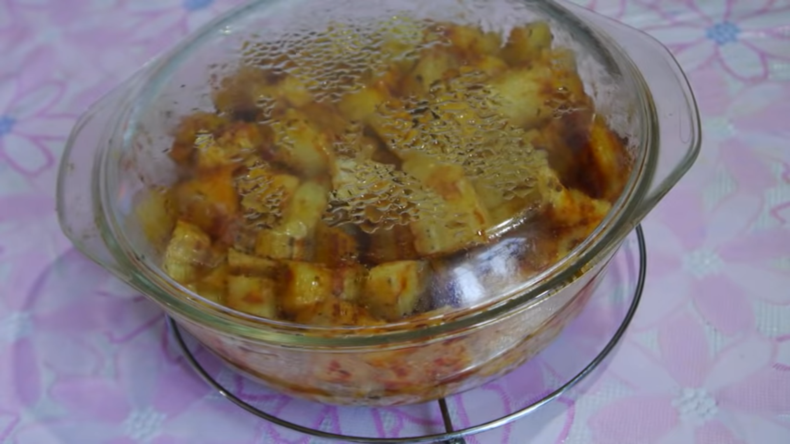
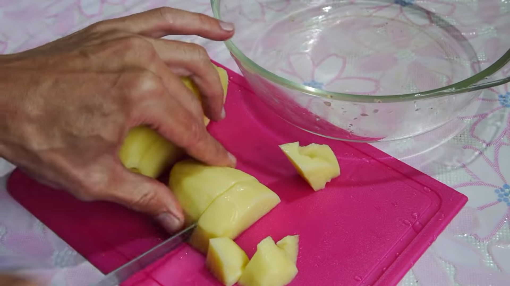
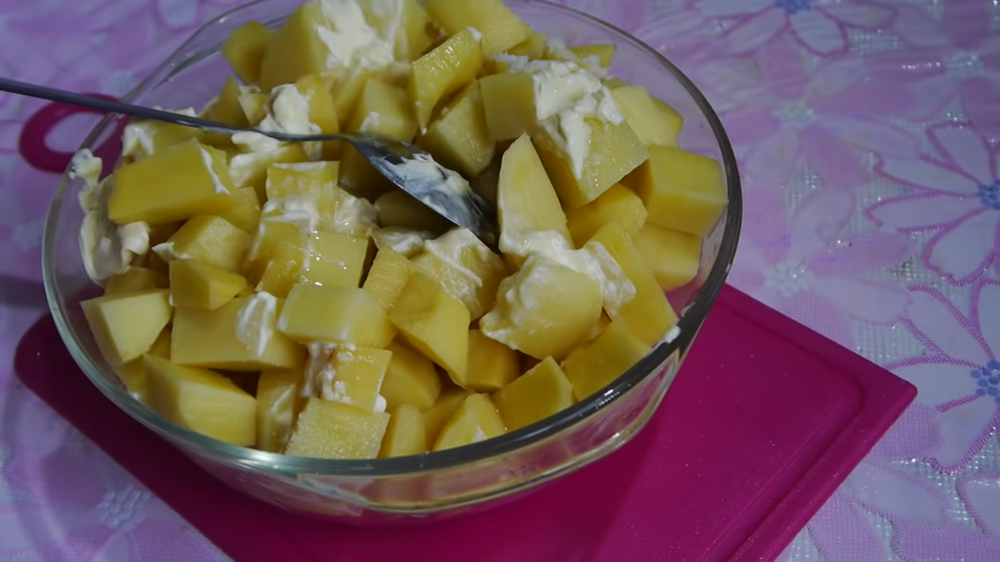
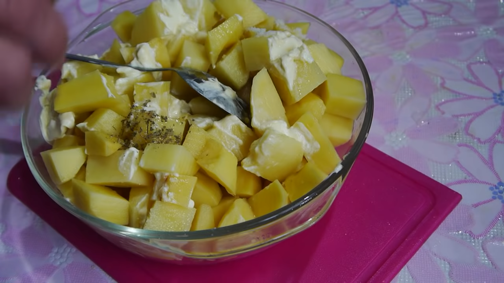
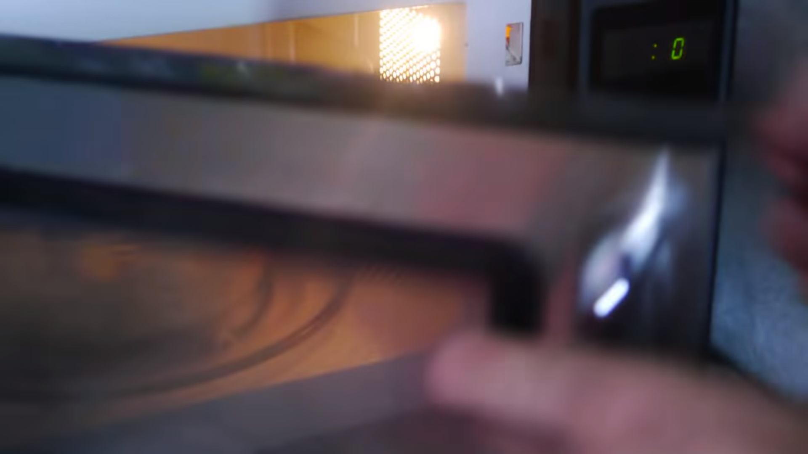
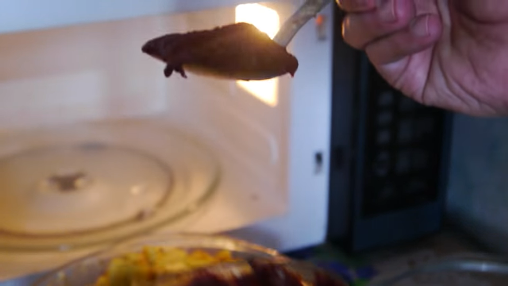
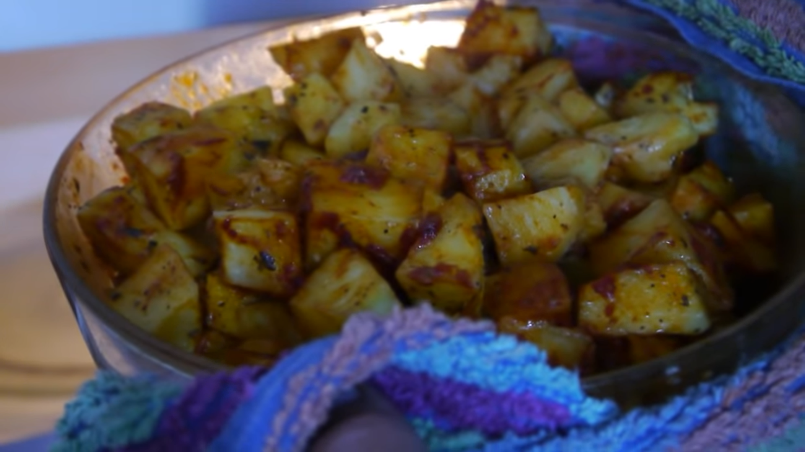

Добрый день! Сегодня я вам покажу рецепт картошки в микроволновке.

Нам понадобится:
Картошка чищенная
соль
майонез
масло
томатная паста.
для начала нарезаем картошку кубиками.

потом добавляем 2 чайных ложки соли, 2 столовых ложки майонеза и перемешать.
после перемешивания добавляете 1 столовую ложку масла, и снова перемешиваете.

Затем добавляем приправы по вкусу

затем подогреваем в микроволновке 5 минут, после 5 минут перемешиваем.

после этого ещё раз подогреваем 5 минут, а после этого перемешиваем и добавляем томатную пасту

после этого подогреваем ещё 1 раз, премешиваете и ваше блюдо готово
